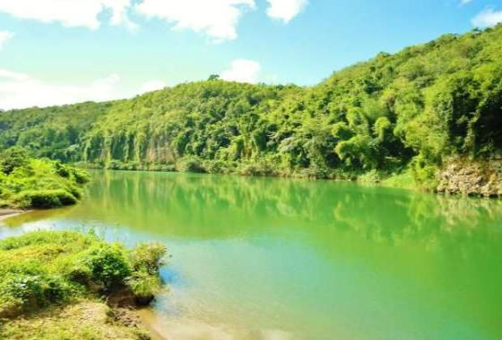

El parque Nacional del Este, tambien cononcido como Parque Nacional Cotumbanama e una de las reservas naturales
mas importantes de la Republica Dominicana. Este parque ofrece una rica biodiversidad y pasajes impresionantes.
A continucacion, se muestra una imagen del Parque Nacional del Este:
En el parque, puedes realizar diversas actividades como:
Para mas informacion, puedes visitar los siguientes enlaces
Este es un video sobre el Parque Nacional del Este:
Escucha los sonidos de la naturaleza en el Parque Nacional del Este: